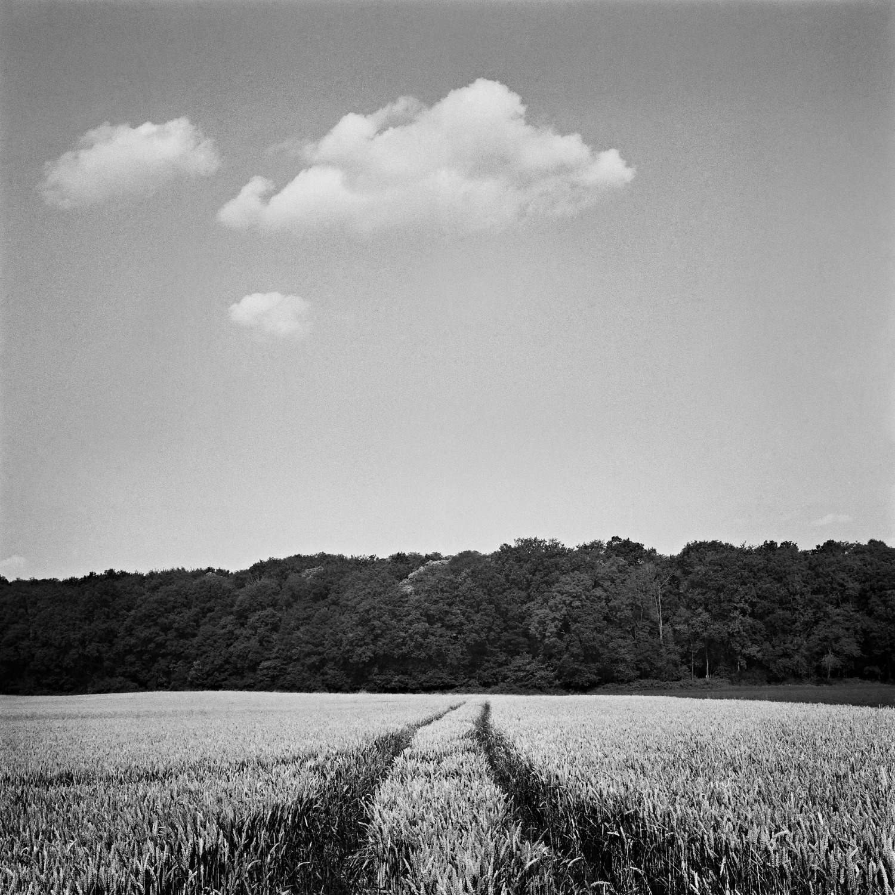

emmanuel pineau
PHOTOGRAPHER / CINEMATOGRAPHER
video
new
photography
about
contact
blog
☰
Notes, film tests, behind the scenes
Blog
8 Reasons to Try Kentmere Pan 100
Analog

5 Reasons to use Kodak Xtol
Analog